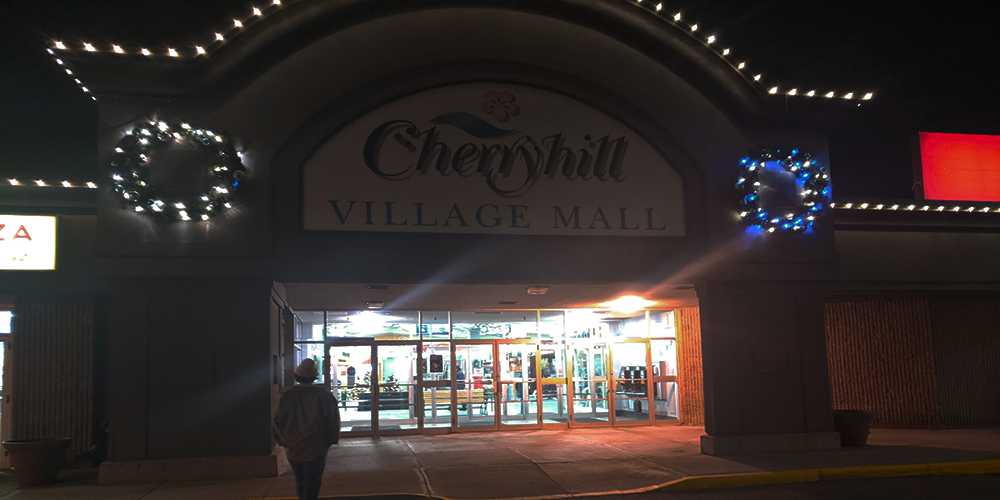

Cherryhill Mall
Image1
Summary
Located on Oxford Street and a block away from Wharncliffe, Cherryhill Mall is often remembered as “The place you go to get your passport”. This mall is rather small, mostly consisting of a single hall spanning between a Shoppers Drug Mart and a Metro grocery store. This mall has a design that has a large amount of 1990s influence. Many of the signs and art that decorate the walls seem as if they were ripped straight from the 90s. While this could, in some situations, make the mall seem dated and drab, Cherryhill is very tidy and well kept. This makes the mood of the mall very cozy and comfortable instead. A highlight of this design is the cafeteria.
Image2
Is it Dead?
At a glance, this mall may seem to be dead but I do not believe this is the case. The average traffic of this mall is quite steady and only a few of the store fronts are not in use. This isn’t to say Cherryhill is booming of course. Many of the businesses seem to be slow and most of the stores and food vendors are small, independent operations. This malls style certainly fits into what is considered a dead mall, but this location is frequented to classify it as such.